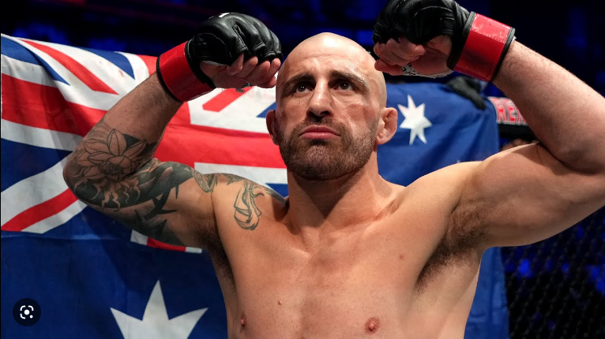
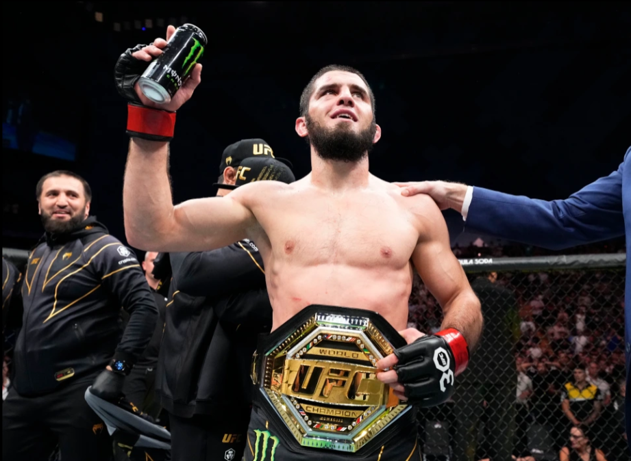
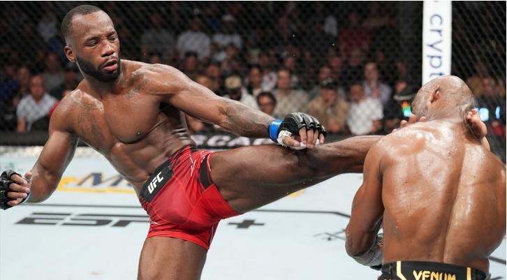
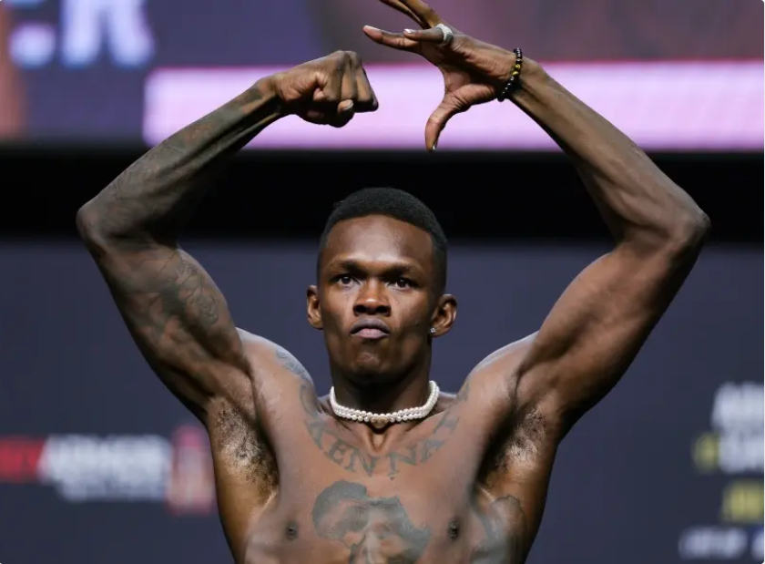
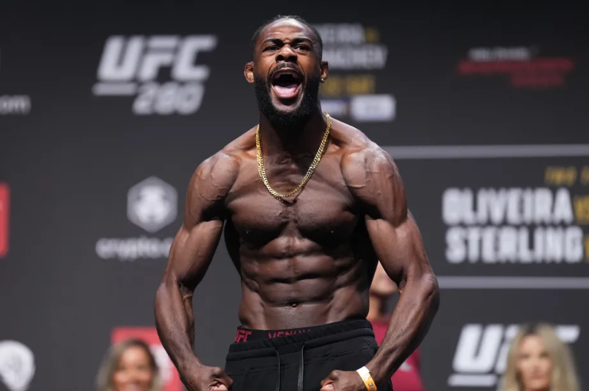
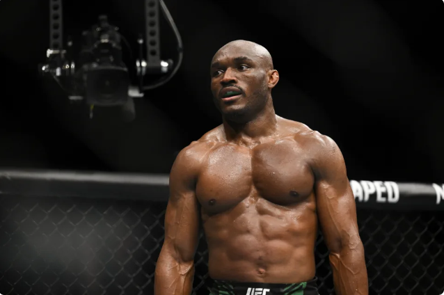
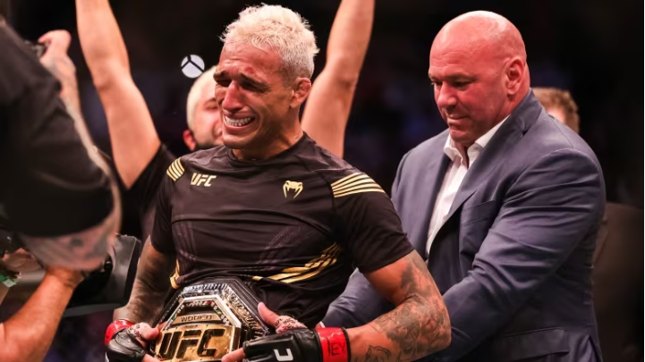
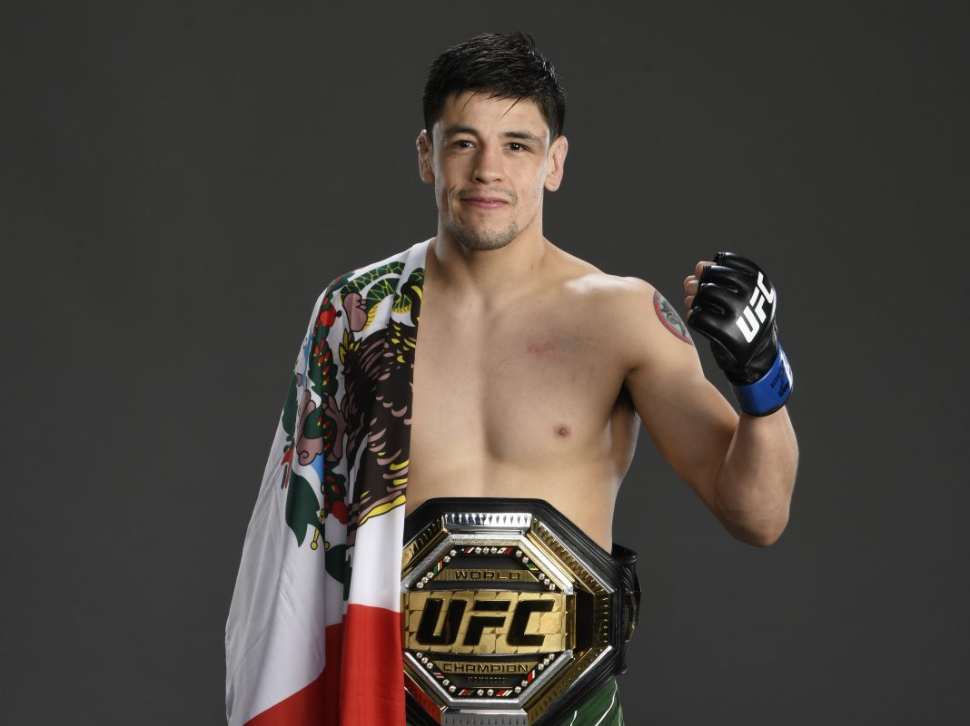
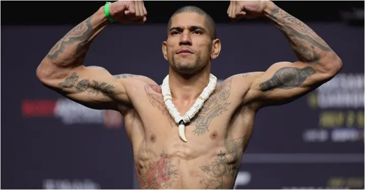

1. JON JONES

Com quase 50 libras de peso adicionado após uma tão esperada mudança para peso pesado, Jones removeu qualquer medo de ferrugem da gaiola depois de três anos afastado, finalizando rapidamente Cyril Gane para se tornar um campeão de duas divisões. Aos 35, o retorno de Jones coincidiu perfeitamente para a promoção com a saída de Francis Ngannou. O próximo é o ex-campeão Stipe Miocic, possivelmente para novembro.
2. ALEXANDER VOLKANOVSKI
O mago da trocação provou que seu wrestling é de classe mundial em uma derrota apertada para o campeão dos leves Islam Makhachev no UFC 284. Volkanovski manteve sua coroa como o melhor do esporte , por enquanto, mas as coisas só ficarão mais difíceis a partir daqui como recém-coroado interino. o campeão dos penas Yair Rodriguez é o próximo em julho.
3. ISLAM MAKHACHEV
Perdido em sua vitória sobre o atual campeão dos penas, Alexander Volkanovski, e as consequências subsequentes da disputa sobre o placar da luta, foi o quão incrivelmente Makhachev cresceu como atacante. Sua precisão e equilíbrio foram capazes de impedir Volkanovski de ultrapassá-lo, mesmo quando seu jogo de luta preferido foi sufocado.
4. LEON EDWARDS
Não duvide mais dele. Sete meses depois de seu momento "Rocky" na vida real contra Kamaru Usman por nocaute no quinto round para conquistar o título até 170 libras, Edwards dobrou a pressão na revanche do UFC 286 ao levar para casa a decisão majoritária . Para sua segunda defesa de título, Edwards deve enfrentar o ex-desafiante ao título Colby Covington.
5. ISRAEL ADESANYA
Depois de três tentativas fracassadas em dois esportes de combate diferentes, Adesanya finalmente matou a fera que é Alex Pereira. "The Last Stylebender" marcou um nocaute retumbante no segundo round do UFC 287 para recuperar seu título até 185 libras e vingar uma paralisação no quinto round em novembro passado.
6. ALJAMAIN STERLING
O reinado de Sterling no topo da divisão mais profunda do esporte nem sempre produziu resultados conclusivos, mas produziu grandes vitórias sobre nomes historicamente relevantes. Adicione Henry Cejudo a essa lista após a vitória inebriante de Sterling por decisão dividida sobre o ex-campeão no UFC 288 em maio. "The Funk Master" continua a elevar seu jogo a um nível superior.
7. KAMARU USMAN
Kamarudeen Usman [1] (nascido em 11 de maio de 1987) é um lutador de MMA profissional nigeriano-americano , ex- lutador de freestyle e lutador de folkstyle aposentado . Atualmente compete na divisão meio-médio do Ultimate Fighting Championship (UFC), onde é o ex- campeão meio-médio do UFC . Usman também é o vencedor do torneio The Ultimate Fighter 21 . Em 14 de novembro de 2022, ele era o número 1 no ranking dos meio-médios masculinos do UFC , [9] e em 18 de abril de 2023, ele era o número 7 no ranking peso por peso masculino do UFC . [10]
8. CHARLES OLIVEIRA
A perda unilateral do título da máquina de finalização brasileira para Islam Mahkachev foi resultado de um confronto estilístico ruim ou as formas imprudentes e dramáticas de Oliveira finalmente o alcançaram? De qualquer forma, o lutador de 33 anos será forçado a se reagrupar após uma notável sequência de 11 vitórias consecutivas que não será esquecida tão cedo. O próximo é Beneil Dariush em junho.
9. BRANDON MORENO
Brandon Carrillo Moreno (nascido em 7 de dezembro de 1993) é um lutador mexicano de artes marciais mistas. Ele atualmente compete na divisão Peso Mosca do Ultimate Fighting Championship (UFC), onde é o atual e duas vezes Campeão Peso Mosca do UFC. Profissional desde 2011, Moreno também competiu pela Legacy Fighting Alliance, onde foi Campeão Peso Mosca da Legacy Fighting Alliance. Em 18 de abril de 2023, ele era o 9º no ranking peso por peso masculino do UFC.[9]
10. ALEX PEREIRA
Alexsandro Pereira, mais conhecido como Alex Pereira, Alex Poatan ou apenas Poatan (São Bernardo do Campo, 7 de julho de 1987), é um lutador brasileiro profissional de artes marciais mistas e ex-lutador de kickboxing.[8] Atualmente, compete na divisão dos médios do Ultimate Fighting Championship (UFC). No kickboxing, já foi campeão meio-pesado e médio do Glory, sendo o primeiro e único lutador a ter títulos do Glory em duas categorias de peso simultaneamente. Também competiu em organizações como It's Showtime e SUPERKOMBAT Fighting Championship.